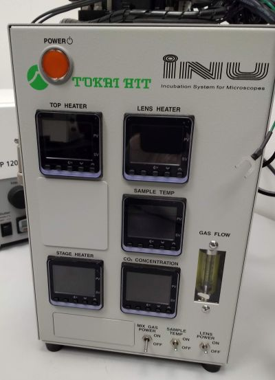
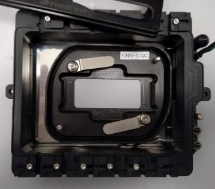
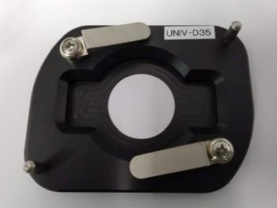

⁝☰
System Overview
ABIF
Booking System
|
On-stage incubator

Tokai Hit INU on-stage incubator:
Temperature control of the sample (e.g. for experiments at physiological temperature)
Equipped with an
objective heater for immersion objectives
.
Water bath in the chamber to maintain higher humidity.
Possibility to connect to a CO
2
cylinder for controlling CO
2
concentration in the chamber.
Compatible with all
inverted microscopes
at
ABIF
(using the multiwell plate stage insert).
Available with adapters for chambered coverslip or 35 mm Petri dish:
 
Usage fees [SGD/hour]
Academia
Industry
0
0
Location
ABIF, SCELSE, B2 (SBS-B2n-27P)
Contact
abif@e.ntu.edu.sg
BACK TO TOP